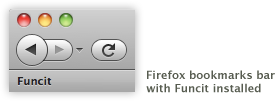
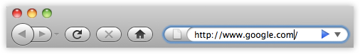
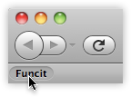
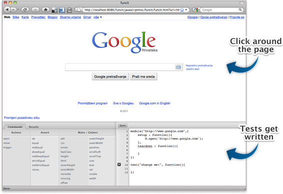

1
Drag the following link into your bookmarks bar (in Firefox):
FuncIt

2
Open another web page (like Google). 
3
Click the bookmarklet. 
4
Use Funcit to write and run tests for that web page. 
© Jupiter IT - JavaScriptMVC Training and Support